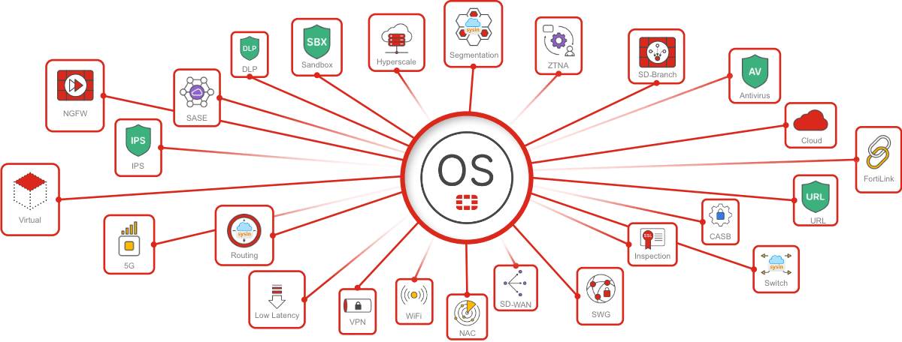

请访问原文链接：FortiOS 8.0 发布 - 适用于 Security Fabric 的统一 AI 驱动型操作系统 查看最新版。原创作品，转载请保留出处。
作者主页：sysin.org
FortiOS 是 Fortinet 的原生 AI 驱动型抗量子计算操作系统，是 Fortinet Security Fabric 平台的基础引擎。通过将网络和安全融合到单一的高性能功能框架中，FortiOS 消除了分散的单点产品造成的安全缺口，并简化了大规模管理。这种统一的架构利用 AI 的强大功能来推动一致的安全策略、无缝的用户体验以及所有环境中的实时可见性，包括本地、多云、混合以及融合的 IT/OT 环境。借助 FortiOS，企业最终可以实现真正集成的、机器速度的防御。

FortiOS 8.0 发布公告
FortiOS 8.0 提供强大的 AI 驱动安全能力、下一代 SASE 以及量子安全功能，帮助企业在整个数字基础设施中实现一致的防护与性能，同时简化安全架构。
谢青领导的 Fortinet®（纳斯达克代码：FTNT）作为推动网络与安全融合的全球网络安全领导者，今日宣布推出 FortiOS 8.0，这是驱动 Fortinet Security Fabric 的最新操作系统版本。该版本作为 Fortinet 在 Accelerate 2026 大会上展示的安全网络创新成果之一发布，FortiOS 8.0 提供强大的 AI 驱动安全能力、下一代 SASE 以及量子安全特性，帮助企业在整个数字基础设施中实现一致的防护与性能，同时简化安全架构。

FortiOS 8.0 体现了 Fortinet 在网络与安全交汇领域超过 25 年的持续创新。随着企业不断拥抱 AI、云以及日益加密的环境，统一的操作系统对于降低复杂性、提升可视性并确保安全能够在不影响业务发展的前提下扩展至关重要。
—— Ken Xie，Fortinet 创始人、董事会主席兼首席执行官
✅ 面向未来安全网络的统一平台
随着企业加速推进数字化转型，包括生成式 AI（GenAI）应用、混合办公以及云优先战略，安全团队在不增加复杂性的前提下扩展防护能力的压力不断增加。FortiOS 8.0 通过统一操作系统推进安全网络发展 (sysin)，在网络边缘、云以及数据中心提供更深入的可视性、更强的控制能力以及面向未来的安全保障，从而应对这些挑战。
FortiOS 8.0 在三大核心创新领域实现突破：AI 驱动安全、下一代 SASE 以及量子安全防护，帮助企业在支持现代连接模式的同时，为未来做好准备。
✅ 通过深度可视性与 AI 感知控制保障 AI 使用安全
随着企业快速采用 GenAI 和自主代理，FortiOS 8.0 引入多项新能力，帮助企业理解、治理并保护网络中的 AI 使用。主要 AI 驱动增强包括：
- 面向 AI 攻击面与影子 AI 的 FortiView：提供对企业中 AI 应用和服务使用情况的实时可视性，并区分授权与未授权工具，使安全团队能够快速识别风险或未知的 AI 使用行为，降低合规风险，并在无需事后响应的情况下实现安全的 AI 应用。
- AI 感知应用控制：允许使用经过批准的 GenAI 工具，同时阻止可能导致敏感数据泄露的高风险操作，使员工在提升生产力的同时保护知识产权、客户数据以及受监管信息。
- 模型上下文协议（MCP）与代理间通信（A2A）可视性：揭示隐藏的 AI 活动以及应用、代理和工具之间的交互，减少数据可能被误用或外泄的盲区，并增强安全团队对信息流动的控制能力。
- 增强的数据防泄漏（DLP）与光学字符识别（OCR）：检测嵌入在图像、扫描件和截图中的敏感数据，这些内容通常会绕过传统基于文本的检测机制，从而弥补常见的数据泄露漏洞，帮助企业避免数据泄露、罚款及声誉损失。
- 覆盖 Fortinet Security Fabric 的 AI 代理：通过引导式对话工作流简化防火墙和 SD-WAN 环境中的故障排查与配置，降低 IT 团队的运维负担，缩短响应时间，并减少可能导致系统中断或安全漏洞的配置错误。
✅ 通过下一代 SASE 推进网络边缘能力
FortiOS 8.0 强化了 Fortinet 的下一代 SASE 能力，以支持对性能敏感、受监管以及关键任务环境。新增和增强的 SASE 功能包括：
- SASE Outpost：通过在客户可控位置（如本地、私有数据中心或托管机房）部署 SASE 接入点（POP），将 SASE 策略执行更靠近用户与应用，同时保持集中式云管理。用户可在需要时保留本地策略执行，而无需构建独立架构。
- Sovereign SASE 部署选项：提供多层数据主权模型 (sysin)，实现对区域日志存储、控制平面驻留、主权 POP 以及在客户数据中心内完全主权部署的精细控制。随着全球市场对隐私、数据驻留及国家安全要求的提升，这种灵活性愈发关键。
- 统一 SD-WAN 套件：集成覆盖网络（overlay）与底层网络（underlay）连接、集中管理及报告功能，从而提升可用性与流量优化能力，并简化采购与支持流程。
- 多路径 IPsec 隧道：提升分布式环境中的弹性、可用性与性能，从而改善应用性能并增强关键站点的可靠性。
✅ 扩展量子安全防护
FortiOS 8.0 通过在产品和协议层面扩展量子安全加密能力，持续引领企业迈向后量子时代。相关增强包括：
- 抗量子加密控制：通过后量子密码（PQC）证书（如 ML-DSA）保护关键管理访问路径（包括无代理 VPN 连接）的认证与密钥建立过程。
- 增强的 SSL 深度检测：结合混合密钥交换与后量子安全加密，在保持强端到端加密的同时揭示隐藏在加密流量中的威胁，并避免连接被静默降级。
- 量子安全 SASE 能力：通过增强的 SSL 深度检测（结合混合密钥交换与后量子加密）揭示加密流量中的威胁，同时通过 Fortinet 防火墙提供的抗量子安全机制，保护关键访问路径（包括管理访问和无代理 VPN）。
✅ 助力当下与未来的安全增长
借助 FortiOS 8.0，Fortinet 持续推进其安全网络愿景，提供一个能够随业务发展而演进的统一平台。通过降低复杂性、提升运维效率，并将面向未来的安全能力直接嵌入网络中，FortiOS 8.0 为企业提供了一个可扩展的基础，以支持数字化转型、AI 应用以及在不断变化的威胁环境中的长期韧性。
FortiOS 主要增强功能
生成式 AI 安全 - 增强型 FortiView 提供的可见性以及对已批准和未批准 AI 应用的控制可实现安全创新，同时避免敏感数据泄露。AI 感知安全策略执行可阻止风险操作，同时允许使用已批准的 GenAI 工具来提高生产力。
MCP 和 A2A 检测 - 该检测功能通过识别 MCP 和 A2A 流量来揭示隐藏的 AI 活动，从而清晰洞察应用、代理和工具在后台的交互方式。通过可区分已批准应用与未批准或有风险 AI 行为的精准控制，强制执行安全、受监管的 AI 使用。
适用于 FortiGate 的 FortiAI-Assist - 这款 AI 助手能够快速诊断防火墙问题，从而简化故障排除流程，并为您提供清晰的分步修复指导。将复杂的 Fortinet 防火墙任务转化为简单的对话式指令，从而减少错误并节省宝贵的管理员时间。
统一代理增强功能 - FortiClient 支持抗量子密码 (PQC) 以实现安全的 VPN 连接，支持端点风险评分以实现状态可见性和自适应 ZTNA，并支持对 AI 应用程序及其通信的检测和控制。
数据湖增强功能 - FortiOS 8.0 将网络、端点和身份遥测数据整合到一个统一的 XDR 面板中，并使用嵌入式 AI 代理自动执行分类和根因分析。这一转变可实现机器速度响应和身份驱动型检测 (sysin)，从而在攻击链的早期阶段消除复杂攻击。
增强的数据保护 - FortiGuard 防数据泄露中的光学字符识别 (OCR) 功能可检测图像和扫描件中的敏感数据，确保任何内容都不会逃过传统的基于文本的检查。通过自动识别暴露的个人身份信息 (PII)、文档和屏幕截图（即使它们嵌入在非文本格式中），阻止更多渠道的数据泄露。
量子安全 - FortiOS 8.0 包含对 NIST 批准算法的增强支持、全面的加密敏捷性以及 SSL 深度检测。此外，还通过符合 Federal Information Processing Standards (FIPS) 204/205 标准的混合密钥交换，为管理访问和无代理 VPN 提供抗量子计算安全性，从而保护关键访问路径并实现端到端加密。
高级 AI/ML 入侵防御服务 - 高级的本地 AI/ML 入侵防御服务引擎（所有 FortiGate 型号均提供）可通过检测利用 DNS 伪装其流量的攻击者，发现隐藏的命令和控制活动。
OT 安全 - FortiOS 8.0 将高级安全控制扩展到 OT 环境，支持虚拟 IP (VIP)，可实现与 OT 服务器的加密通信。这可确保安全性并符合 NERC CIP/IEC 62443 合规要求，实现审计就绪，增强 IPsec 连接，并改进隔离和检测。
新一代安全访问服务边缘 (SASE) - 我们灵活的统一安全访问服务边缘 (SASE) 解决方案支持多种部署选项，可为任何企业保护对互联网、私有应用程序和 SaaS 应用程序的访问，确保 SD-WAN 的数据治理和长期加密弹性。
下载地址
FortiOS 8.0 - Fortinet VM deployment Images
- FortiGate for AliCloud platform Version 8.0.0
- FortiGate for AWS platform Version 8.0.0
- FortiGate for Azure platform Version 8.0.0
- FortiGate for Google platform Version 8.0.0
- FortiGate for Hyper-V platform Version 8.0.0
- FortiGate for IBM platform Version 8.0.0
- FortiGate for KVM platform Version 8.0.0
- FortiGate for OCI platform Version 8.0.0
- FortiGate for Oracle platform Version 8.0.0
- FortiGate for Rackspace platform Version 8.0.0
- FortiGate for VMware ESXi platform Version 8.0.0
- FortiGate for Xen platform Version 8.0.0
百度网盘链接：准备完毕，公布方式待定。
相关产品：FortiManager 8.0 发布 - 网络管理软件系统和运营工具

文章用于推荐和分享优秀的软件产品及其相关技术，所有软件默认提供官方原版（免费版或试用版），免费分享。对于部分产品笔者加入了自己的理解和分析，方便学习和研究使用。任何内容若侵犯了您的版权，请联系作者删除。如果您喜欢这篇文章或者觉得它对您有所帮助，或者发现有不当之处，欢迎您发表评论，也欢迎您分享这个网站，或者赞赏一下作者，谢谢！
 支付宝赞赏
支付宝赞赏  微信赞赏
微信赞赏赞赏一下
敬请注册！点击 “登录” - “用户注册”（已知不支持 21.cn/189.cn 邮箱）。 请勿使用联合登录（已关闭）。